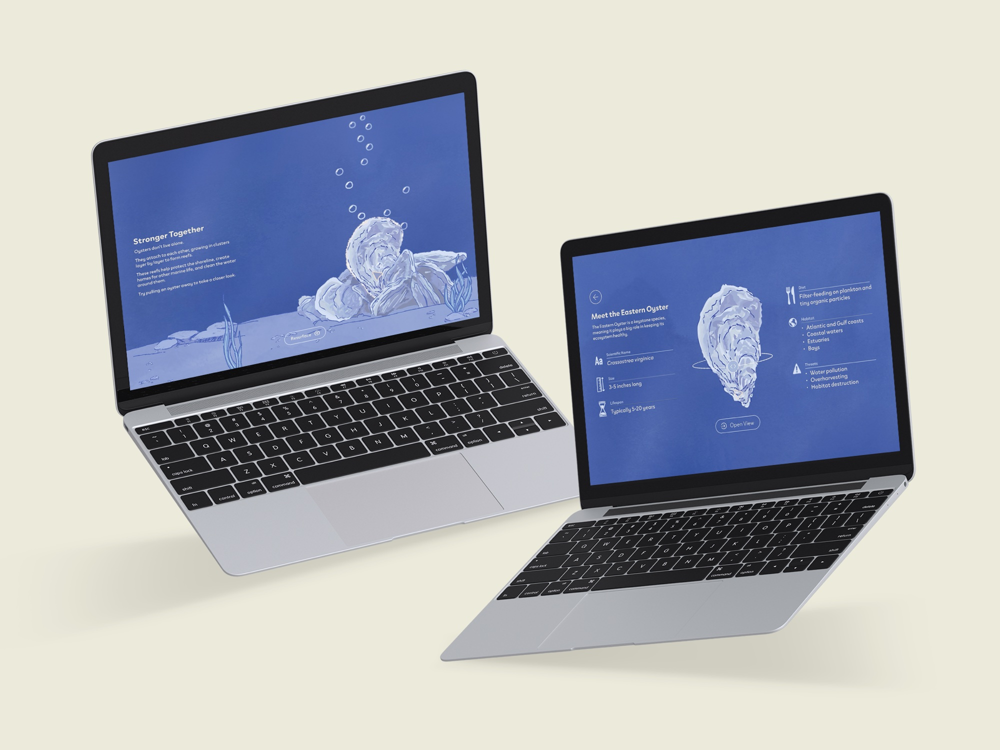

NO. 103 · sightedlogged 2026
BENEATH THE SURFACE

- Year
- 2026
- Services
- UI Design and Illustration
In this project, I created an interactive, informational website that explores the important ecological role of oysters. Oysters naturally filter water, taking away harmful pollutants. They also protect coastlines from erosion and provide homes and food to other marine life. Through this project, I wanted to demonstrate their significance and advocate for restoration.
